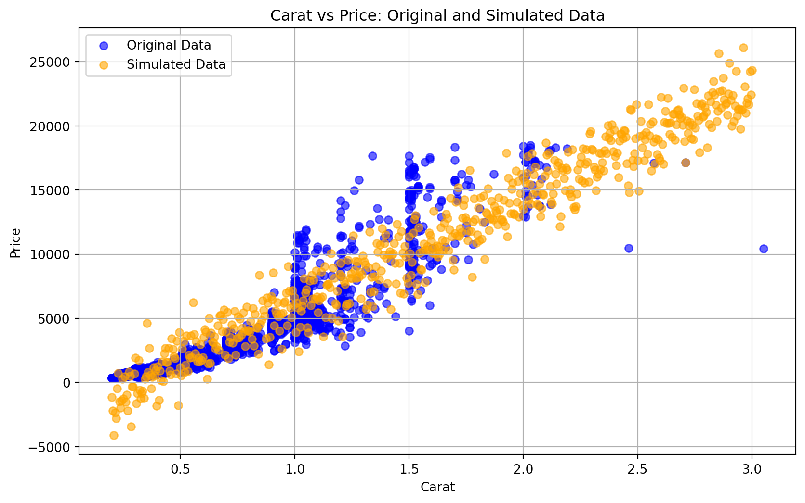
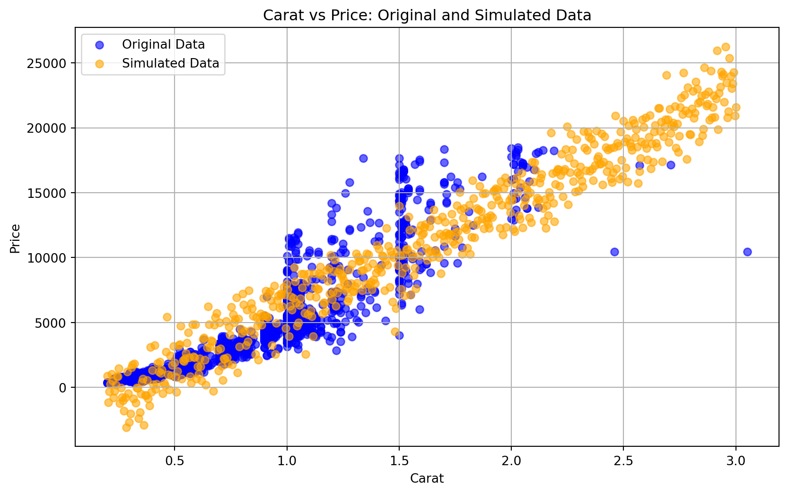

Generalized Linear Models
Intro
At some point you have probably been exposed to linear regression… You may roll your eyes at being asked to warp back to your early education… But linear regression, and it’s generalized cousins, are an incredibly useful set of techniques in themselves, and truly understanding them is an enormous boon for understanding the entire suite of statistical and machine learning methods.
We’re also going to approach this in a way that is likely backwards from your previous introduction. Typically you’ll be presented with some data and the task will be to find a best fit line through the data. Often this starts with a single explanatory variable, but can it can easily be extended to many more. The actual algorithm of the best fit line is usually hand waved as some sort of magic - tackling that magic, i.e. finding the data generating process that best fits the data, is saved for the second half of this primer. Here we will think about it in the forward direction, if we already have a linear regression model, what data does it generate? And how likely were we to see that data once generated?
#| '!! shinylive warning !!': |
#| shinylive does not work in self-contained HTML documents.
#| Please set `embed-resources: false` in your metadata.
#| standalone: true
#| viewerHeight: 700
import math
import numpy as np
import matplotlib.pyplot as plt
from shiny import App, ui, reactive, render
app_ui = ui.page_fluid(
ui.h2("Linear Regression Likelihood"),
# Row 1: Sliders for alpha, beta, sigma^2, and n
ui.row(
ui.column(
3,
ui.input_slider(
"alphaInput", "Intercept (α):",
min=-10, max=10, value=0, step=0.1
),
),
ui.column(
3,
ui.input_slider(
"betaInput", "Slope (β):",
min=-5, max=5, value=1, step=0.1
),
),
ui.column(
3,
ui.input_slider(
"varInput", "Variance (σ²):",
min=0.1, max=10, value=1, step=0.1
),
),
ui.column(
3,
ui.input_slider(
"nInput", "Number of samples:",
min=5, max=100, value=10, step=1
),
),
),
ui.br(),
# Row 2: Buttons, current data, and log-likelihood
ui.row(
ui.column(
2,
ui.input_action_button("mleBtn", "MLE"),
),
ui.column(
2,
ui.input_action_button("newSampleBtn", "NEW SAMPLE"),
),
ui.column(
4,
ui.h4("Current Data (X, Y):"),
ui.output_text_verbatim("dataText"),
),
ui.column(
4,
ui.h4("Log-Likelihood:"),
ui.output_text("llOutput"),
),
),
ui.br(),
# Plot
ui.output_plot("regressionPlot", height="400px"),
)
def server(input, output, session):
# Reactive value to store X and Y
data_vals = reactive.Value(None)
# Function to generate linear-regression data
def generate_data(n, alpha, beta, var):
# For simplicity, let X be a random uniform(0, 10)
X = np.random.uniform(0, 10, size=n)
# Y = alpha + beta*X + noise
Y = alpha + beta*X + np.random.normal(0, np.sqrt(var), size=n)
return X, Y
# Initialize data once
data_vals.set(generate_data(10, 0, 1, 1))
# Generate a new sample when 'NEW SAMPLE' is pressed
@reactive.Effect
@reactive.event(input.newSampleBtn)
def _():
n = input.nInput()
alpha = input.alphaInput()
beta = input.betaInput()
var = input.varInput()
data_vals.set(generate_data(n, alpha, beta, var))
# Display the current data
@output
@render.text
def dataText():
X, Y = data_vals()
# Show a few decimal places
pairs_str = [
f"({round(xi,1)}, {round(yi,1)})" for xi, yi in zip(X, Y)
]
return ", ".join(pairs_str)
# When 'MLE' is clicked, compute OLS estimates and update alpha, beta, var
@reactive.Effect
@reactive.event(input.mleBtn)
def _():
X, Y = data_vals()
n = len(Y)
# Compute MLE (which in classical linear regression is the OLS solution)
X_mean = np.mean(X)
Y_mean = np.mean(Y)
# beta_hat = Cov(X,Y)/Var(X)
beta_hat = np.sum((X - X_mean)*(Y - Y_mean)) / np.sum((X - X_mean)**2)
# alpha_hat = mean(Y) - beta_hat*mean(X)
alpha_hat = Y_mean - beta_hat*X_mean
# var_hat = (1/n) * sum((y_i - alpha_hat - beta_hat*x_i)^2)
residuals = Y - (alpha_hat + beta_hat*X)
var_hat = np.sum(residuals**2) / n
# Update the UI sliders
session.send_input_message("alphaInput", {"value": alpha_hat})
session.send_input_message("betaInput", {"value": beta_hat})
session.send_input_message("varInput", {"value": var_hat})
# Reactive expression for log-likelihood
@reactive.Calc
def log_likelihood():
X, Y = data_vals()
alpha = input.alphaInput()
beta = input.betaInput()
var = input.varInput()
n = len(Y)
if var <= 0:
return float("nan")
# Compute sum of squared residuals
residuals = Y - (alpha + beta*X)
ssr = np.sum(residuals**2)
# log-likelihood for linear regression
term1 = -0.5 * n * math.log(2 * math.pi * var)
term2 = -0.5 * (ssr / var)
return term1 + term2
# Show the log-likelihood
@output
@render.text
def llOutput():
ll = log_likelihood()
return str(round(ll, 2))
# Plot the data and the regression line
@output
@render.plot
def regressionPlot():
X, Y = data_vals()
alpha = input.alphaInput()
beta = input.betaInput()
var = input.varInput()
fig, ax = plt.subplots(figsize=(6, 4))
# Plot data points
ax.scatter(X, Y, color="blue", alpha=0.7, label="Data")
# Plot regression line from min(X) to max(X)
x_min, x_max = np.min(X), np.max(X)
x_vals = np.linspace(x_min, x_max, 100)
y_vals = alpha + beta * x_vals
ax.plot(x_vals, y_vals, color="red", label=f"Line (α={round(alpha,2)}, β={round(beta,2)})")
ax.set_title("Linear Regression Fit")
ax.set_xlabel("X")
ax.set_ylabel("Y")
ax.legend()
ax.grid(True)
return fig
app = App(app_ui, server)Single Variable Regression
The great thing about data generation with a model is that it is going to show you what it knows and not what you think it knows. Let’s walk through an example with a common dataset made available with the R package ggplot2 or the Python package Seaborn - it is the diamonds dataset which show sale price based on diamond characteristics.
Here’s a simply X-Y plot that shows us the relationship between diamond size (carats) and price:
We’re going to fit the data with a linear regression model, it will have this mathematical form:
\[ y_i = \beta_0 + \beta_1 x + \epsilon \]
Where \(\beta_0\) is the y-intercept, \(\beta_1\) is the the slope, and \(\epsilon\) is the error. The variable x will be the diamond size/carat and y will be the price.
We’re leaving all the model fitting until part two of this primer, but suffice it to say I fit a linear model using standard techniques and the outputs included a common metric for accuracy called R-squared with a value of about 0.84. It ranges from 0 to 1 and values close to 1 indicate the model is good at explaining the variability in the data, so this is a reasonably good model.
You’ve probably seen a linear regression line fit to data many times in your life, and I’m not going to bother you with one more. Instead I’m going to generate data based on what the model has ‘learned’, which I think will be more useful and interesting.

Model Flaws
OK, let’s point out a few things this model is doing wrong:
The model produces a decent number of negative values at small carats. I don’t think this is real because no one has paid me to take a diamond before.
The variation around the mean value is the same regardless of whether it is a 0.3 carat diamond or a 1.5 carat diamond. What’s actually happening in the data is called Heteroscedasticity, a fine English word, and actually quite common.
There are some important ‘break points’ in the data that a linear model is not going to capture, like the extra premium placed on a 1.00 carat diamond vs 0.99 carats.
It seems large diamonds, of presumably poor or average quality, are not as valuable as the model seems to think.
Linear models are very interpretable, so someone familiar with them probably could have pointed out these flaws very early. However, when more variables are introduced or we use a more flexible modeling technique, data generation is going to be even more valuable.
Probability of the Data
While we can expect all models to be flawed to some extent, using a model with some very obvious flaws makes estimating the probability of data quite dubious. For example, we have some data that is 5+ standard deviations away, which is rarer than one in a million. I don’t think the data is that rare, I think the model is just not very good.
NEEDS MORE MATH
Multi Variable Regression
There are actually some more columns/attributes/variables in the diamond dataset we didn’t use. Often in life we know things like this exist but they are just not available. However, right now we’ll use them and see if we can improve the model.
Now you’re thinking, well you just didn’t use a complicated enough model… Maybe throw a neural network at it. And while you aren’t all wrong - you are also on the path to the dark side.
Overfitting
… It’s easy to see how you can ‘overfit’ a multi-variate linear regression model, you just include too many parameters, e.g. parameters that are just noise that look good when training the model but actually hurt performance on a real ‘test’ dataset. It’s also possible to overfit a linear regression model with one ‘X’ variable. If you don’t know already I suggest you think about for a second… Alright, it’s assuming there is a relationship to X, i.e. a slope, when in reality the model just varies around a constant mean value.